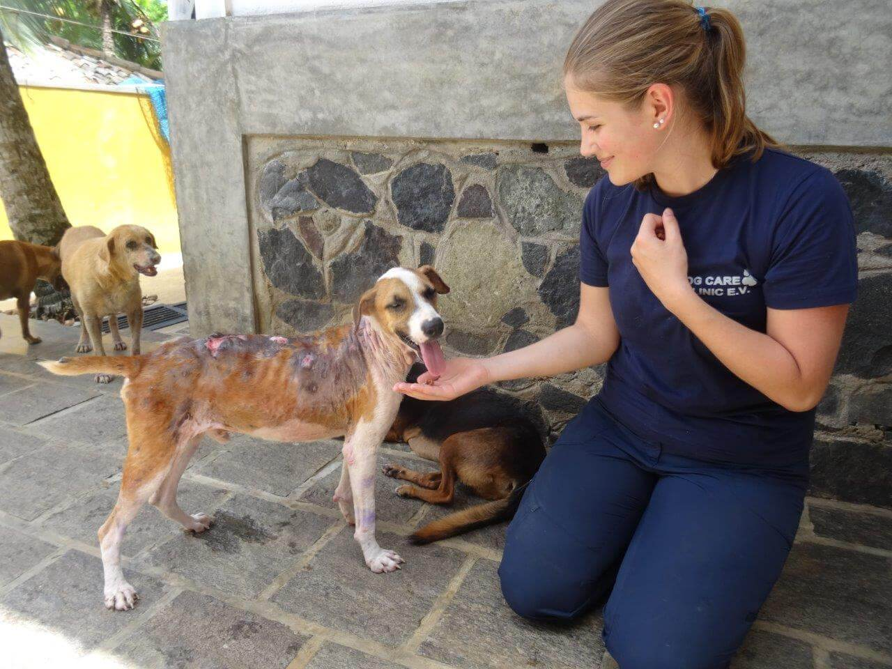
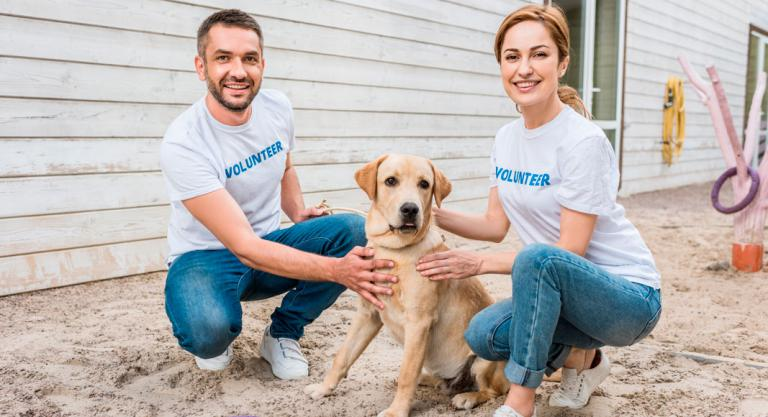
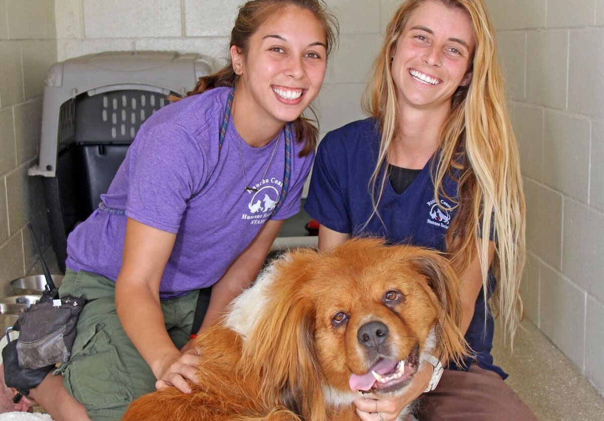
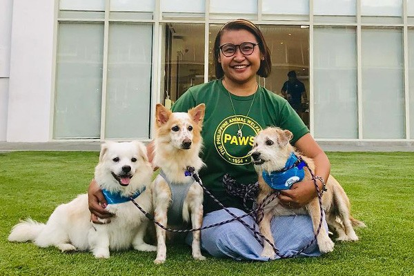
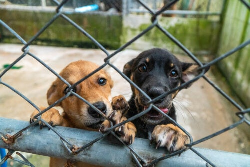

¡Bienvenidos a Patitas de amor!
Adoptar, cuidar, respestar es lo principal.
Apredamos a ayudar y priorizar el rescate animal.

La adopción es el camino más humano y ético de hacerse de un amigo para toda la vida. Adoptar a perritos que estaban en busca de hogar es lo mejor que podrás hacer. ¡Gracias a todas las personas que optan por la adopción!

La defensa de los animales es una causa que involucra justicia, compasión y respeto. Con responsabilidad, seguiremos defendiendo los derechos animales, dando así voz a aquellos que todavía no la tienen en nuestra sociedad.

Un “Voluntario” debe ser cariñoso y apasionado por los animales y está ansioso por aprender sobre los animales

Hay muchas formas de ayudar. Puedes ser voluntario en albergues,apadrinar a un perro o gato, hacer una donación, o simplemente ayudarnos a difundir la información de rescate en nuestras redes son nuestros principales medios de difusión y entre más personas conozcan a nuestros animalitos, más oportunidades tendrán éstos de encontrar al mejor adoptante.

Nuestra VISIÓN es construir una ciudadanía interesada, informada y participativa en el rescate animal, para mejorar la calidad de vidad de estás mascotas. Compuesta por un grupo de voluntarios unidos por el amor hacia los animales y juntos, podemos hacer mucho por ellos.

Nuestra MISIÓN es rescatar animales de la calle que necesiten ayuda con condiciones dificiles, curarlos, vacunarlos y darlos en adopción.Tenemos un compromiso con los perritos y gatitos y cuidarlos de manera adecuada según sus necesidades.
GRUPO TITANS - todos los derechos reservados © 2021